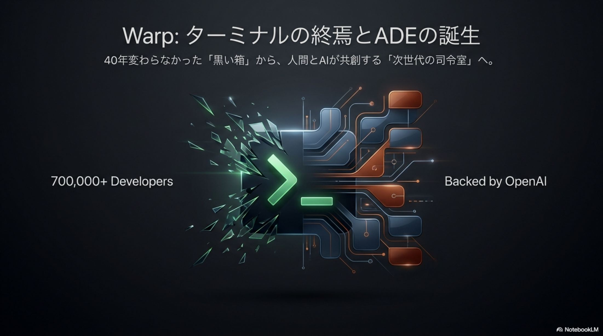
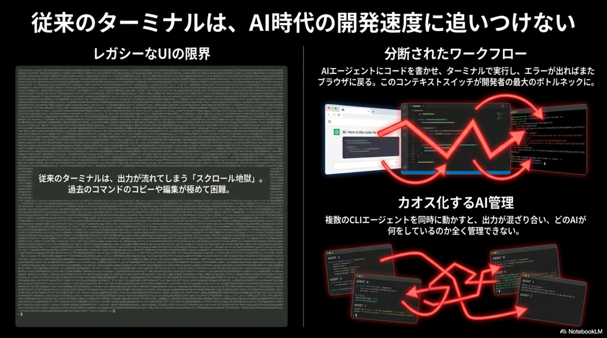
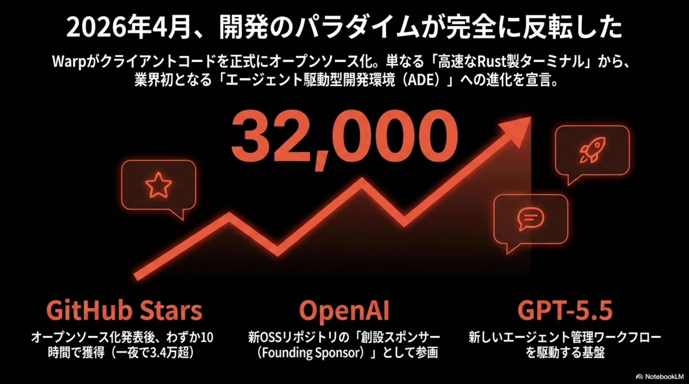
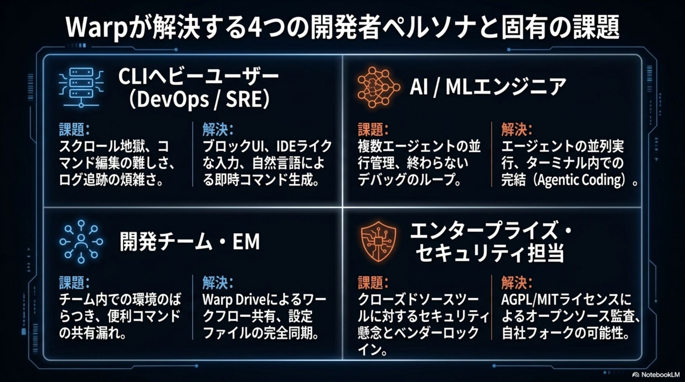
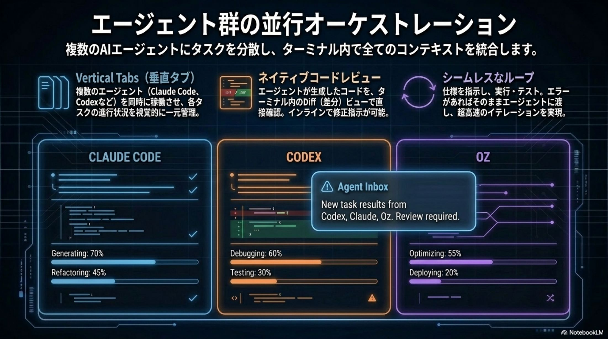
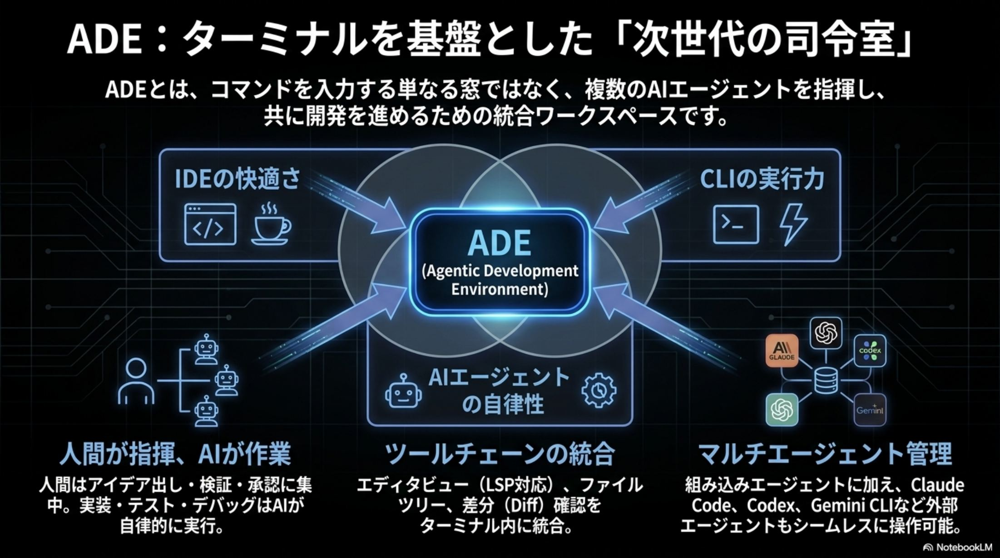
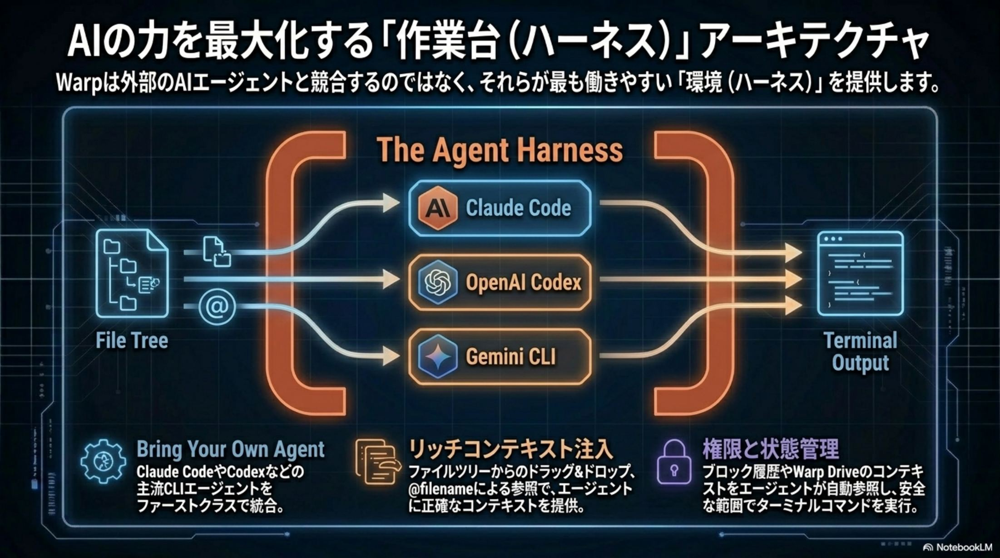
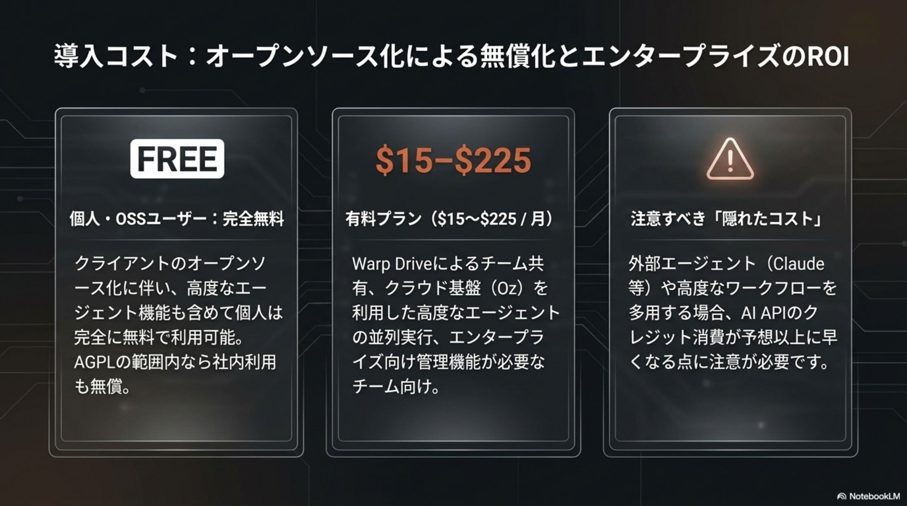
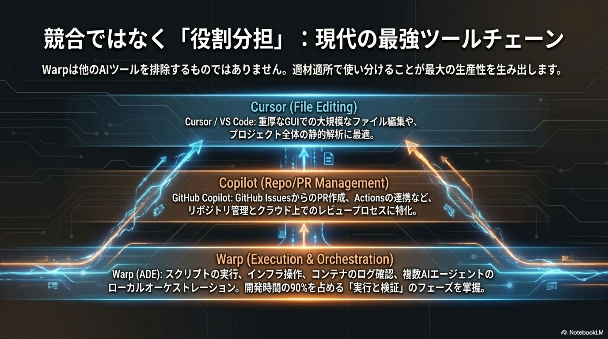
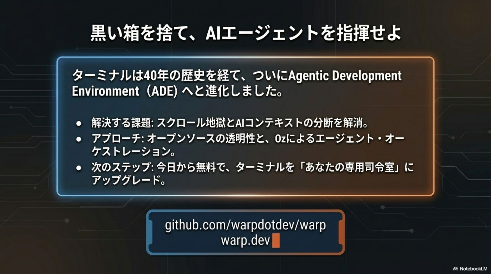

過去のコンテキストが流れ去る
従来のターミナルでは出力が際限なく流れる。AI に「さっきのエラー」を正確に渡せず、説明コストだけが膨らむ。
ADE Revolution 2026 · No. 04/30
Warp が再定義する次世代 AI 駆動開発環境。
40 年間ほぼ変わらなかった「文字を打ち込む黒い箱」が、AI エージェントの「司令塔」へと進化。Warp は 2026 年 4 月、自らを ADE (Agentic Development Environment) と再定義し、クライアントコードをオープンソース化した。
GitHub でわずか 10 時間で 32,000 スターを獲得。OpenAI が「創設スポンサー」として参加し、GPT-5.1（デフォルト）/ GPT-5.5 が駆動。70 万人以上のユーザーベースと共に、「人間がアーキテクチャを監督し、AI が実作業を完遂する」という新しい DevEx の標準が始まった。
全体図 · 1 枚で読む Warp ADE
これまでの GUI/CLI ツールが「コードを書く道具」だったのに対し、Warp は「複数 AI エージェントを束ねるハーネス」として再設計された。下のページ図はその全体構造を 1 枚で示している。

課題 · 40 年止まっていたインターフェース
出力が際限なく流れるスクロール地獄、複数エージェントを並行運用するためのタブと脳の往復、属人化した秘伝のタレ (ランブック) ── 既存ツールは AI 時代に向けて設計されていない。
従来のターミナルでは出力が際限なく流れる。AI に「さっきのエラー」を正確に渡せず、説明コストだけが膨らむ。
複数 CLI エージェントを並行運用すると、ブラウザと複数タブの往復で思考が分断。実験プロセスがカオス化する。
サーバー構築や障害対応のランブックは個人のシェル履歴に閉じ込められ、オンボーディングが非効率。組織知が蓄積しない。

転換 · 操作から監督へ
人間がコマンドを 1 つずつ打ち込む時代から、「人間がアーキテクチャの方向性を監督し、AI エージェントが実作業を完遂する」段階へ。これは単なる UI の改善ではなく、DevEx (デベロッパーエクスペリエンス) の構造的再定義。
毎回コマンドを入力し、出力を読み、次のコマンドを打つ。人間は AI/シェルのオペレーター。
Issue や仕様を Warp に渡せば、複数エージェントが並行して実装を進める。人間はアーキテクト / 監督者として承認と方向づけのみ行う。

機能 · ADE を支える 4 本柱
Warp は Rust + GPU 加速描画 をベースに、Blocks / Agent Harness / Rich Context / Oz の 4 つで「ADE」を構成する。Kimi · Qwen 等の OSS モデル対応と、最適モデルの自動選択ルーティングモードも搭載。
コマンドと出力を 1 つのブロックとして構造化。AI への正確なコンテキスト注入を自動化し、コピー＆ペーストを過去の遺物にする。失敗ログをそのままクリックして AI に渡せる。
Vertical Tabs と Unified Notification Center により、Claude Code / Codex / Gemini CLI 等の複数エージェントを司令塔として一元管理。100x 級の生産性が現実に。
@ キーひとつで、ファイル · URL · 過去の出力ブロックを即座に AI へアタッチ。指示を記述する説明コストを劇的に低減し、思考の流れを止めない。
クラウド上で数千エージェントを並列実行。ローカル CPU/RAM を消費せず、Issue から PR 作成までを大規模に自動化。全操作の監査ログを保持し、エンタープライズ要件にも対応。


証明 · OSS 化のソーシャルプルーフ
クライアントコードのオープンソース化は、エンタープライズ導入の最大障壁だった「セキュリティ監査可能性」を解消する決定的転換点。発表直後の反響は、開発者コミュニティの強い支持を裏付けている。
OSS 化発表からわずか10 時間で 32,000 スターを獲得。開発者コミュニティの圧倒的支持と期待感を示すソーシャルプルーフ。
OpenAI が公式に「創設スポンサー」として参加。GPT-5.1 をデフォルト、GPT-5.5 を高負荷タスクで駆動するファーストパーティ統合。
OSS 化以前から既に70 万人超の開発者が日常的に Warp を利用。コミュニティ密度の高さが、ADE の信頼性を支える土台になっている。

対象 · 誰の「痛み」を解決するか
既存ツールチェーンが生み出している「認知負荷の増大」と「コンテキストの断絶」を、Warp はレイヤーごとに異なるアプローチで解消する。
ライセンス · 戦略的コピーレフト
Warp は「戦略的コピーレフト」を採用 ── UI 周辺は寛容な MIT で外部参入を促進し、メインコードは AGPL v3 で競合フォークを構造的に防ぐ。OSS とビジネス持続性のバランスを取る上級者の選択。
warpui_core 等のフロントエンド層
寛容なライセンスで周辺エコシステムの拡大を促進。コントリビューターやプラグイン開発者の参入障壁を下げ、Warp 中心のエコノミーを加速させる。
競合他社が Warp をフォークしクローズドな商用サービスを構築することを構造的に防ぐ。ユーザーには監査可能性 (透明性) を保証しつつ、ビジネス持続性を担保する。

比較 · 2026 年ターミナル / IDE エコシステム
Ghostty は描画速度で iTerm2 の 2.5〜3x を出すが、それは「出力窓」としての性能。Cursor は IDE 起点。Warp はターミナル起点の ADEとして、純粋スピードや GUI ではなく「人間 × エージェント協調作業の総時間」で価値を出す。
ターミナルから生まれたエージェント司令塔。シェル実行 / ログ監視 / インフラ操作 / 複数 CLI エージェントのオーケストレーションを一手に担う。
→ 「総時間短縮」と「認知負荷の低減」で他を圧倒する純粋な描画パフォーマンスでは Ghostty が iTerm2 の 2.5〜3x を出し、Warp をも凌駕する場面がある。だが「速い出力窓」以上ではない。
→ エージェント協調や構造化機能は持たないIDE (エディタ) 起点で AI を統合。複雑な GUI 編集では分があるが、シェル実行・ログ監視・複数 CLI 並行運用には不向き。
→ Warp と棲み分け (ADE × IDE のスタック構成)結論 ── 開発者が業務時間の 90% を AI エージェントとの対話に費やすようになりつつある中、ターミナルが単なる入出力ツールから「エージェント・オーケストレーター」へと昇華することは、技術スタック統合の必然である。

経済 · TCO / ROI と料金プラン
クライアントの OSS 化に伴い、以前は有料だった高度な AI エージェント機能も含めて個人 / コミュニティは基本無料に開放された。エンタープライズプランは単なるツール利用料ではなく、クラウド上のエージェント実行クレジットとチーム共有機能への投資を意味する。
クライアント本体は OSS 化により無料。個人開発者と OSS コントリビューターはここで完結する。
個人有料プラン。Warp Drive 個人版と AI クレジットの上限拡張を提供。
チーム単位の Warp Drive 共有。ナレッジとワークフロー設定を組織内で標準化できる。
Oz クラウド実行クレジット + 高度なセキュリティ管理 + 監査ログ。組織導入の本命プラン。
結論 · 2026 年の DevEx 標準
AI エージェントが実装の重労働を担い、人間が品質・セキュリティ・方向性を監督する ── このモデルを、誰でもフォークし、検証し、組織に組み込めるようになった。クローズドソースを理由に導入を躊躇していたエンタープライズにとって、今回の OSS 化は「セキュリティ監査可能性」を担保する決定的転換点である。
まずは build.warp.dev にアクセスし、Oz エージェントがリアルタイムで Issue をトリアージし PR を作成する様子を観察する。
OSS クライアントを個人マシンに導入し、Claude Code / Codex / Gemini CLI の並列運用を実体験する。
チームで Warp Drive を共有し、エンタープライズプランで Oz クラウド実行と監査ログを有効化。組織標準のエージェント実行基盤を整える。
競争力は「どのターミナルを使うか」ではなく、「AI エージェントが自律的に働ける場をいかに整えているか」に集約される。文字を打ち込む時代は終わった。アーキテクチャを監督する 「ADE 時代」 へ移行せよ。編集後記 · 2026-04-30

